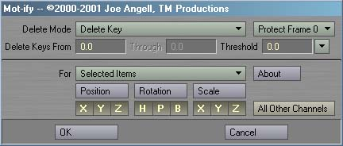
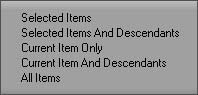
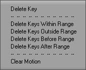
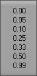
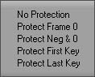

|
To install Mot-ify, just follow these steps:
Mot-ify is designed to completely replace the Delete Key panel built into Lightwave 6, and you can use it in exactly the same way. It is recommended that you replace your default Delete Key key (the Delete key in the default keyboard layouts) with Mot-ify so it is always available, as well as providing you with more advanced options than Delete Key at a keystroke.  To use Mot-ify, you must first select the item you want to delete keyframes from. Once you have selected the appropriate items, launch Mot-ify. You should see an interface simlar to the one shown above. Using Mot-Ify involes selecting some items, choosing a Delete Mode, entering a range and threshold, enabling or disabling channels, choosing a For mode, and hitting OK to process the keyframes. Most of these steps are optional; to simply delete a keyframe at the current time in the previous For mode, launch Mot-ify and click OK. Clicking Cancel will exit without modifing any motions.  Most of these options should look familiar from the Delete Key panel. For example, the Position, Rotation and Scale buttons, and the individual channel buttons operate in the exact same manner as those in the Delete Key panel. The For pop-up also identical, except that it includes a new option, Selected Items And Descendants, which is conspicuously missing from the the built-in panel. As with Delete Key, For determines which objects will have their keys deleted. The main differences come at the top of the interface. Delete Mode determines what Mot-ify does to the item's motion. The default mode, Delete Key, forces Mot-ify to act exactly like the built-in Delete Key command, deleteing the key at the specified time. Both integer and fractional keyframe values can be entered. The Threshold field can be used to determine how close a keyframe has to be to the choosen frame to be deleted. This is useful for deleting fractional keyframes when Allow Fractional Current Frame is disabled in Layout's Options Panel.  Delete Keys Within Range will delete all keyframes between the To and From frames, including the To and From frames themselves. As with Delete Key mode, the Threshold can be used to delete keys around before To and after From, although now matter what the threshold is, all keys within the range will be deleted.
Delete Keys Outside Range will delete all keyframes outside the To and From frames, not including the To and From frames themselves. Threshold is not used in thise mode; it only applies to modes where the To or From frames are also deleted.
Delete Keys Before Range deletes all keyframes before the To frame. Similarly, Delete Keys After Range deletes all keys after the From frame. In neither case are the To or From frames deleted. Clear Motion duplicates the function of Lightwave 5.6's Clear Motion feature in the old Motion Graph. All existing keyframes will be deleted, and a new, default keyframe will be created. Unlike 5.6's Clear Motion, this will only clear the channels marked at the bottom of the interface. If all keyframes become deleted in any of these modes, a new default keyframe is created at frame 0 with a positon and rotation of 0.0 on all axes, and a scale of 1.0.  For more control in Delete Key and Delete Within Range, the Threshold can be used. Threshold determines how close a keyframe has to be to the From and To frame numbers in order to be deleted. The default value of 0.0 means that the key must exactly match the frame numbers entered. A value of 0.1 mean that any keyframe within 0.1 frames will be deleted. For example, if the you are trying to delete keyframe 20 with a Threshold of 0.1, all keys between the range of 19.9 throuhg 20.1 will be deleted. A value of 0.5 can be used to ensure that any fractional keys between the current frame and the next or previous frames are deleted with going into the domain of the the next keyframe. The pop-up to the right of the Threshold field contains a number of reasonable presets for the threshold value. The Protection pop-up can be used to ensure that certain important keyframes are not deleted by Mot-ify, no matter what the Delete Mode or To/From range are. This is especially useful when deleting keys outside a range or clearing a motion, where deleting all keyframes could ruin your scene or destroy your character's bone setup and IK poses.  No Protection means that no keyframes will be protected from deletion. This allows you to delete any frame with Mot-ify. Protect Frame 0 will ensure that no keys at frame 0 are deleted. Similarly, Protect Neg & 0 will protect frame 0 and all negative keyframes. Protect First Key and Protect Last Key will keep Mot-ify from deleting the first or last key in the channel, respectivly. The About button will open the About Mot-ify panel, which contains information about the plug-in and a list of keyboard equivilants that can be used. As with Delete Key, Mot-ify has buttons to enabled and disable individual channels and groups of channels. Only the selected channels will be processed. You can click the Position, Rotation and Scale buttons to toggle all the channels in that group, and shift-click to invert that group's selection. The All Other Channels toggle is a very powerful feature, but can cause a lot of damage to your scene if used incorrectly. When you click on it, a message will appear asking if you're really sure you want it enabled. If you do, then all non-motion channels will also be processed by Mot-ify (the Position, Rotation and Scale buttons still determine if the motion channels are processed). This includes all envelopes applied to those items (like Camera Zoom Factor and Light Intensity), envelopes for applied plug-ins (such as Morph Mixer channels), and surface envelopes applied in the Surface Editor. Use this feature carefully, especially when deleting keys on multiple items at once; in such cases Mot-ify will ask you once more if you're really sure you want to do this. To begin processing, fill in the options you want and click OK. In some of the more time-consuming operations, such as clearing the motions of items and their children, or deleting a range of keys in all items, Mot-ify will display a progress window while it works. Limitations
The one thing that keeps Mot-ify from being a complete replacement for Delete Key is edit field control. LWPanels doesn't simulate Layout's handling of Return (which accepts the value and closes the panel) and Enter (which acts like Tab, closing the panel after the last field). You'll also notice that no edit fields are active when you open the panel, which means you can't just call Mot-ify, typing in a value, and hit Return to continue. This is again due to how LWPanels handles edit fields. It is possible to make the edit field enabled by default, but this slows down quick deletion operations by requiring you to hit Enter more times to close the panel. Instead I've opted to make Mot-ify immediatly available for quickly deleting keys at the current time just by calling it and hitting Return or Enter, which probably covers 90% of it's everyday use. To enter a different time value, you'll have to first hit Tab to go to the first edit field, or click in a field. Keyboard Equivilants
Revision History
Bugs? Feature requests? Can't get it to work? Feel free to contact us if you're having any problems or want to request a feature.
All programs presented here are Copyright ©2000-2002 TM Productions, All Rights Reserved. Please contact us if you would like to distribute any of these programs, or if you find any particularly useful. |